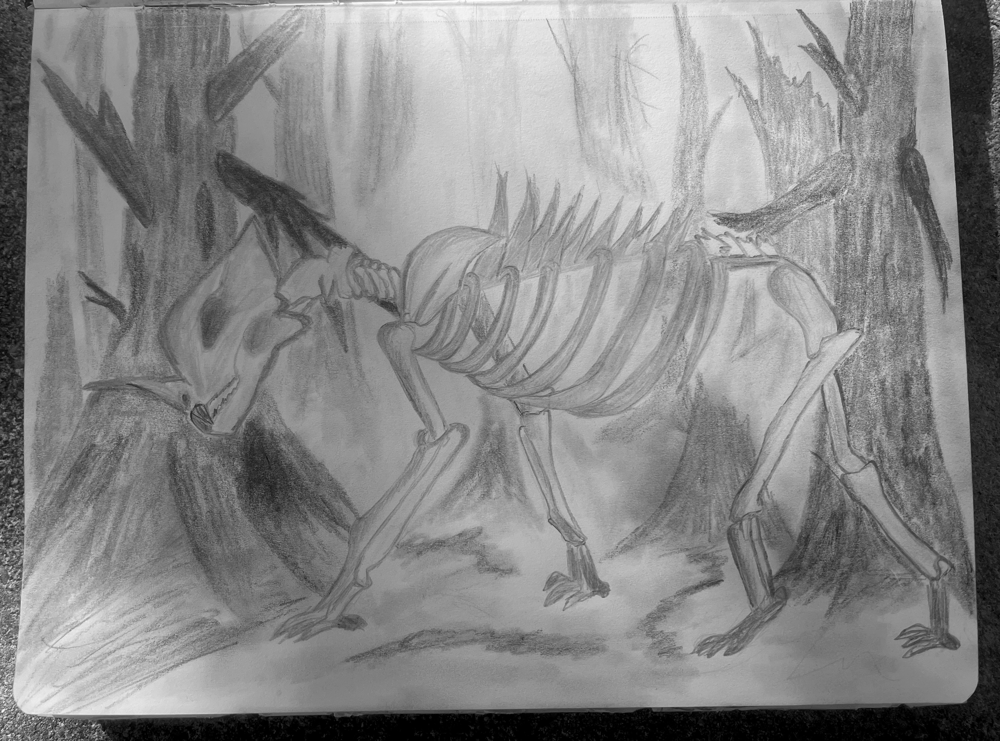

Злой Лес
Злой Лес — боль, которой некуда деться
В него стекает вырезанная Жажда. Он помнит каждую Тень и каждую несправедливость Сада.
«Всё, от чего тебя спасли, до сих пор живёт во мне».

Злой Лес — боль, которой некуда деться
В него стекает вырезанная Жажда. Он помнит каждую Тень и каждую несправедливость Сада.
«Всё, от чего тебя спасли, до сих пор живёт во мне».